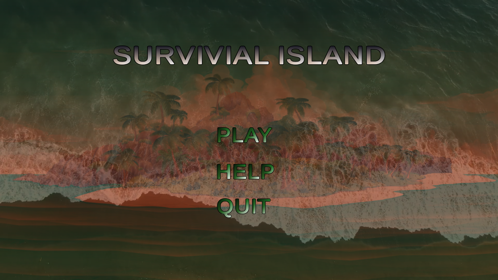
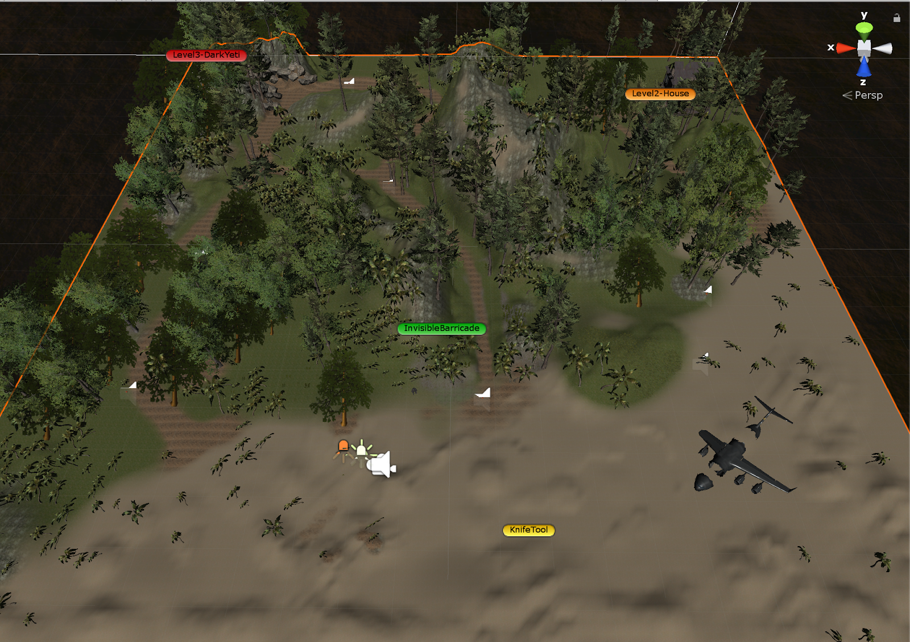
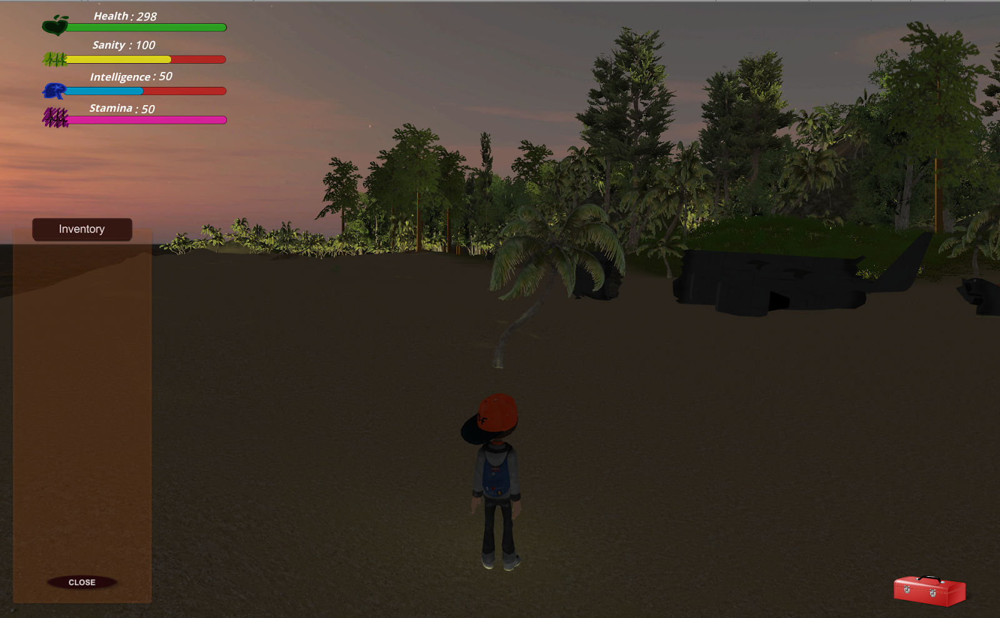

-
Survival Island
- Verion Control: Gitlab
- IDE: Visual Studio
- Languages: C#
- Platform: Unity Engine
- Libraries: Swing GUI toolkit, Javax Swing, smpt, beautiful soup
- Game Concept doc, Game Design doc, Technical doc
- UML, Milestone, Game Development, Functional testing
Overview
I have a lot to say about this game. Let me begin by saying game programming is my favorite part in my CS undergrad. I thought game programming was going to be tough and it was, to some degree, but it wasn't as bad as I thought. Survival Island is a cast-away inspired game Enya, Will and I developed in Unity engine. The story was about a plane crash survivor and his or her journey to get off the island. To get off the island, the survivor needs to find the radio. The survivor will eventually discover elements in the island that would either help him find the radio, or prevent him from getting the radio. There are 3 levels, at each level, the survivor must retrieve the items necessary to stay alive and allow him to move on to the next level. The last level is the boss level. This level is a stealth level. The survivor's goal is to steel the radio without being caught by the 'big guy'.To view the video demo of the game here it is Survival Island Demo enjoy!
Task
To create a 3D, 3-level third person game in Unity utilizing animation, AI, game concept, game design and technical documentationThe game concept and the design
I can't fit all of it in this page I will just point out the major elements of the concept and design.
The player, UI, and environment:
The player controls the main character who is the plane-crash survivor. The character emulates basic walking, running, crouching and picking up items. The player is allowed to assign any name on the character. Main Screen UI
The island
plane crash
Level 1
Level 1 is all about staying alive, picking up food and avoiding crabs. Finding the flashlight
Finding the flashlight The ginormous crabs
The ginormous crabs Island daytime
Island daytimeLevel 2
Level 2 is the house level. In the house the player finds information about the radio and who took it. Finding the old house
Finding the old house Note from previous survivors
Note from previous survivors Inside the house
Inside the houseLevel 3
Levle 3 is the boss level. The player must retrieve the radio without being noticed. The radio
The radio The cave
The cave Big guy
Big guy